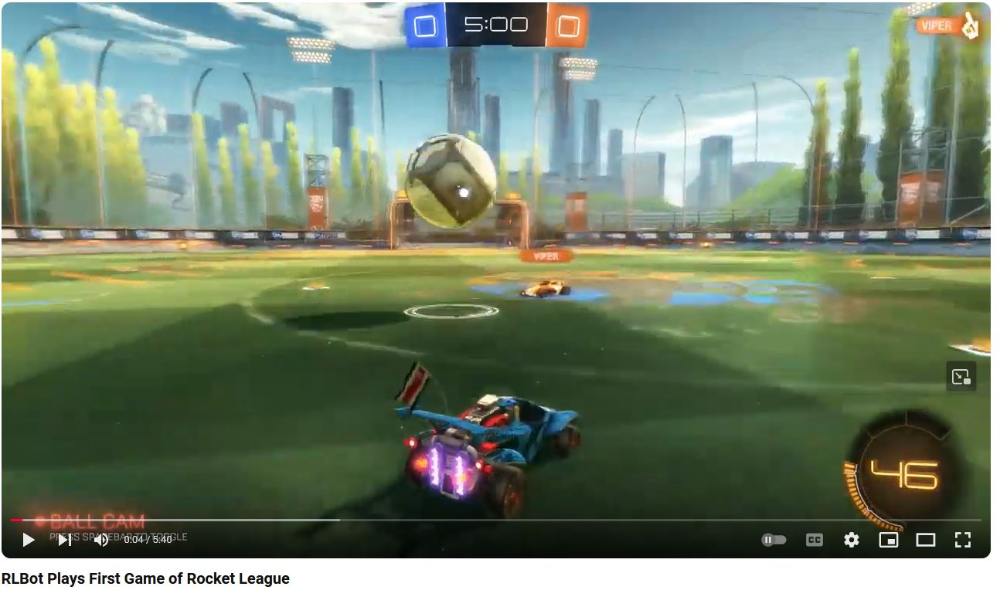
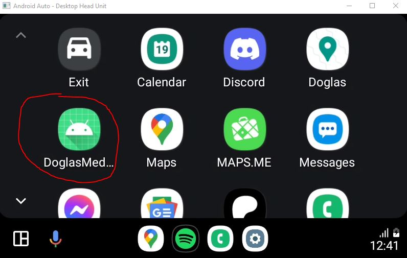
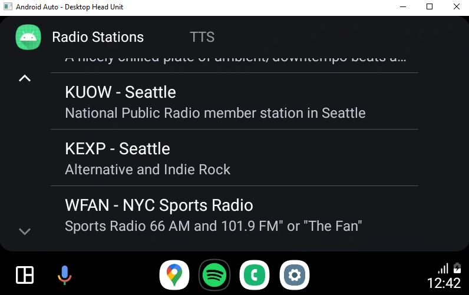
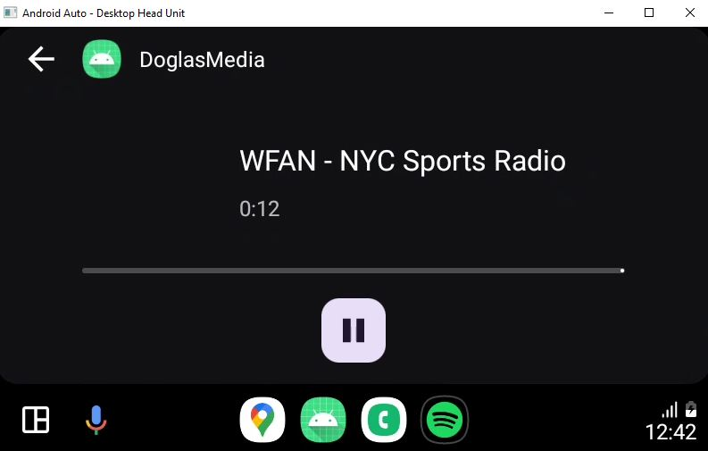

Programming on your own is fun! I find a lot of joy working on whatever interests me. It often presents new challenges and new opportunites that I may not be able
to find in the workplace. Click the links to see what I've cooked up.
I started working on RLBot in January 2017. Around that time there had been some progress with
reinforcement learning in different video games. Predominately I had been looking at
Phillip, a Super Smash Bros Melee AI that had been able to beat human players. The AI
was mostly able to exploit better-than-human reaction time. Artifical limitations to reaction time were being added to try to force the bot to have
to be smarter to defeat humans. Additionally, OpenAI Five had just been recently
announced. Taking on an enormous state-space like DOTA boggled the mind. I had just graduated college and with some young hubris, set out to
try to apply reinforcement learning to the video game Rocket League.

What is Rocket League?
Rocket League is a video game where you operate a car in a 3d space. In addition to driving around you can "jump" "flip" and "boost". The object of the game
is to use your car to play soccer. By driving into the ball you can push the ball into the other team's goal.
Making Rocket League friendly to custom AI
When I started there was no support for custom AI in Rocket League. Rocket League was an extremely popular video game and I wasn't even sure what was possible.
My first two goals were to
Be able to read data from the game
Programmatically send inputs to the game
I was able to accomplish both goals albeit not in the most desireable ways.
Initial Approach to Read Data
This approach hurts to write in hindsight but it did allow a working proof of concept. Rocket League is a program and every program on a computer lives some place
in memory. Using some intuition you can imagine what values probably exist in memory. There is probably an x,y,z coordinate for the car and the ball and that is
probably a floating point value. On screen you also can see the amount of boost your car has. In the picture above I have 46 boost. Somewhere in memory that number
46 exists. The only problem, everything in memory is just a list of bytes and I have no labels to interpret which bytes are which.
CheatEngine is a program that helps interpret memory. For example I can look at every 4 byte sequence as an int. I can also take a snapshot of all the memory in the
program and filter it. Maybe I only want to look at memory addresses that have the number 46. Now I drive over a boost pad and my boost is at 100. Looking at those
addresses from before I look which now equal 100. Once I rinse and repeat this process I can filter down to one place in memory that represents the boost. I can also
do this for the position of my car. Now I don't know what the exact x,y,z cords of my car are but I can still take a snapshot of all memory addresses and interpret
them as floats. If I jump and pause the game while in midair I expect that my position is now a higher (or lower!) z value. I filter to the memory addresses that
were greater than the last snapshot. Eventually I narrow it down to a few possible addresses. I edit the value in memory and see my car teleport above the map. Bingo!
That's my car's z coordinate.
So through this arduous process I found data about my car. Fortuantely data is grouped near each other so I notice some other positions and rotation values for my
car are grouped in memory. One huge problem, this memory location is only good for a brief amount of time. Say I start a new soccer match or close and reopen the game.
This data is going to be in a completely different location. How can I get something permanent out of this so I don't have to do this process repeatedly?
Remember we know the memory location of my z position for the current game. Well what if we look at pointers to that memory location. By scanning values that equal that
memory location we have possible pointers in memory. Furthermore, by scanning pointers to those pointers up multiple levels we can build a tree of possible pointer chains.
The highest pointer needs to be offset from the start of where Rocket League (the program) starts in memory. That way when we restart Rocket League the offset to the intial
pointer is constant while the location windows puts Rocket League in memory is different. Believe it or not, this process worked well enough that I could store all this
pointer information and be able to restart the game / my computer and my next run I could be reading the car values from memory without having to search again. One small
problem, every time the game has an update it would break and I would have to do it all over again!
Initial Approach to Game Input
This one is way simpler. There are already libraries out there that can be used to simulate a controller and programmatically send inputs. My same program that
was reading data out of memory could send virtual joystick presses to the game.
Reaching Out For Help / Tournament Origins
I had made a proof of concept. I tried training a small model to mimic the joystick presses I input while playing the game. It just kinda drove around randomly
which didn't surprise me too much because there was almost no data. It was slightly distinct from completely random because at least it learned that I usually
accelerate forward and make occasional turns. You can watch that here.
I made a post on reddit about the project and gome some useful feedback. The most useful feedback was
about opening the project to be accessible to others. Someone brought to my attention the DOOM AI tournament and that gave me the idea to run an AI tournament
in Rocket League. I put in some more work to the framework and posted on the Rocket League subreddit my initial tournament promotion.
Early Community
Transition to DLL Injection
I was fortunate that people were interested and eagerly joined the discord I created for the tournament. Some people ran into problems right away with the memory
reading where it just wasn't giving them game values on their machine. Some people were successfully using the framework. Fortunately it didn't fall apart right
away. I was extremely active and attentive to suggestions. An individual named ccman32 was extremely helpful for the intial rewrite. He had some experience with
decompiling unreal engine games and suggested hereDLL injection. With DLL injection we could access
game code and use it to get the data we needed. In order to share the data across processes we used a windows feature called Named Shared Memory which allowed
Rocket League with the injected DLL to constantly write game data we needed to a memory location with a known name. Any other process could read/write to the same
memory which gave some interop. This was a good enough framework for the first tournament.
Tournament
I'm so grateful to all the people that submitted bots and helped pitch in for the initial tournament. I streamed the tournament over 2 days on twitch and the only
prize was the glory of winning. We were also able to raise some money for charity as tarehart's chose to have a fundraiser for Direct Relief as part of his bot.
The VODs for the initial tournament are fully available below.
Post-Tournament Improvements
While working on this ccman32 also realized he could improve game inputs so that we don't need virtual controllers (and also so we could send inputs to all cars in
a game not just player controlled cars). In another spot in the shared memory my external process would write the keypress values it desired and the DLL injected rocket
league would read those values and use them for the cars. At the same time Tarehart (the winner of the first tournament) was an extremely active community member watching
these changes. Since he had worked hard on his own bot he had a lot of ideas of what he wanted in the framework. With shared memory there was no information on when the
last read/write was. There was some attempt at locking unlocking to prevent partial reads but to this day I'm unsure if it worked! In order to get whole data received
in order in a more consumable friendly, Tarehart and ccman32 worked together. I was still extremely involved at this point and I liked the proposed changes to the
framework so I approved the designs and pull requests. This was considered V3 of the framework.
Contact with Psyonix
Psyonix the company behind Rocket League, and specifically Psyonix Cone, had taken interest in our initial tournament.
Members of the RLBot community were able to make contact with Psyonix and they were interested in making an official API to support our project so we no longer had
to use DLL injection. NDAs were signed and community members set to work on the new framework. I had already done a ton of work for the framework and tournament so
I decided to take a smaller role at this point. I was still able to see discussions but I take no credit for the labor of the changes to the framework at this point
and after. I promoted Tarehart to be in charge of the community since I was no longer able to fully commit myself to the project.
Afterwards
The community is still thriving and has expanded far beyond what I could have possibly envisioned. Eventually my reinforcement learning dreams of beating pros were
realized by a bot named Seer (highly recommend checking this bot out) ~6-7 years after my work initially started. While I am no longer actively involved in the
community and haven't been for some time it is crazy to see everything that has involved from what just started as a personal project fresh out of college. I'm
grateful to so many people in the community and I apologize to the many peoples names I have omitted in this writeup.
Doglas Radio
This project had a few new things for me, andriod app development and working in Kotlin. I had recently installed a touch screen radio in my '05 Corolla that had
android auto. I was curious if I could make a working android auto app for my car. Specifically I wanted to add New York sports WFAN and the Philadelphia jazz station
WRTI. These radio stations both have internet feeds so I can listen to them outside the geographic range.



This is pretty simple and I can confirm this does work in my car. There may be other android auto internet radio apps out there but this one is mine
and I'm proud of that!
My Personal Website
You are using this project now! This website is an attempt to learn and use some interesting technologies for web development.
This site uses Bolero and is mostly written in F#!
Why Bolero?
I spent 3 years professionally being a functional developer in F# and I loved using the langauge. Professionally I used Websharper
where I could write in F# and it would transpile to javascript. I wanted to learn a slightly different technology and also learn about
WebAssembly at the same time. I am able to write this website almost entirely in F#. It compiles to WebAssembly and some auto-generated
javascript from the framework provides the interop of Javascript and WebAssembly. It's a backend developers dream to not have to write in
javascript!